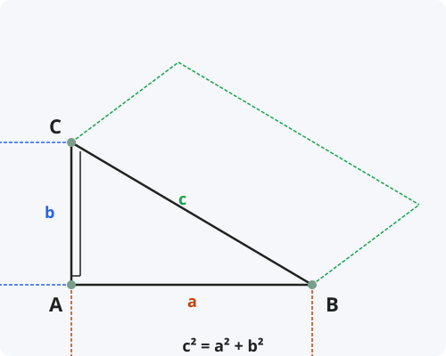

Теорема Пифагора
Формулировка
В прямоугольном треугольнике квадрат гипотенузы равен сумме квадратов катетов.
Обозначения
Пусть дан прямоугольный треугольник ABC с прямым углом C.
a = BC — катет, противолежащий углу A.
b = AC — катет, противолежащий углу B.
c = AB — гипотенуза, противолежащая прямому углу C.
Тогда: c² = a² + b²

Доказательство (через квадраты)
Теорема доказана.
Доказательство (через подобие)
Доказательство через подобие — одно из самых элегантных.
Следствия из теоремы
- Теорема, обратная теореме Пифагора: если в треугольнике квадрат одной стороны равен сумме квадратов двух других, то треугольник прямоугольный.
- Длина гипотенузы: c = √(a² + b²).
- Длина катета: a = √(c² − b²).
- Диагональ квадрата со стороной a: d = a√2.
- Диагональ прямоугольника со сторонами a и b: d = √(a² + b²).
- Расстояние между двумя точками на плоскости: d = √((x₂−x₁)² + (y₂−y₁)²).
Примеры применения
Пример 1. Катеты прямоугольного треугольника равны 3 и 4. Найдите гипотенузу.
Решение: c = √(3² + 4²) = √(9 + 16) = √25 = 5.
Пример 2. Гипотенуза равна 13, один из катетов 5. Найдите второй катет.
Решение: b = √(13² − 5²) = √(169 − 25) = √144 = 12.
Пример 3. Является ли треугольник со сторонами 6, 8, 10 прямоугольным?
Решение: Проверяем: 10² = 100, 6² + 8² = 36 + 64 = 100. Равенство выполняется, треугольник прямоугольный.
Историческая справка
Теорема Пифагора — одна из основополагающих теорем евклидовой геометрии. Хотя она носит имя Пифагора (VI век до н.э.), она была известна задолго до него в Вавилоне, Египте, Индии и Китае.
Вавилонские клинописные таблички (около 1800 г. до н.э.) содержат вычисления с использованием пифагоровых троек. В Древнем Китае теорема была известна как «теорема Гоугу» (Чжоу би суань цзин, около 1000 г. до н.э.).
Пифагору приписывают первое строгое доказательство. Существует более 400 различных доказательств этой теоремы — больше, чем для любой другой математической теоремы.
Интересные факты
- Теорема Пифагора занесена в Книгу рекордов Гиннесса как теорема с наибольшим количеством доказательств.
- Пифагоровы тройки (целые числа a, b, c, удовлетворяющие a² + b² = c²): 3-4-5, 5-12-13, 8-15-17 и т.д.
- Великая теорема Ферма является обобщением теоремы Пифагора: aⁿ + bⁿ = cⁿ не имеет целочисленных решений для n > 2.
- Теорема Пифагора используется в строительстве для проверки прямых углов (метод «египетского треугольника» 3-4-5).
- В неевклидовых геометриях теорема Пифагора не выполняется в классическом виде.